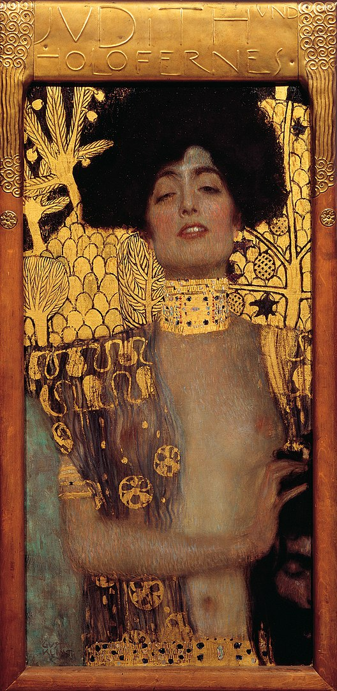
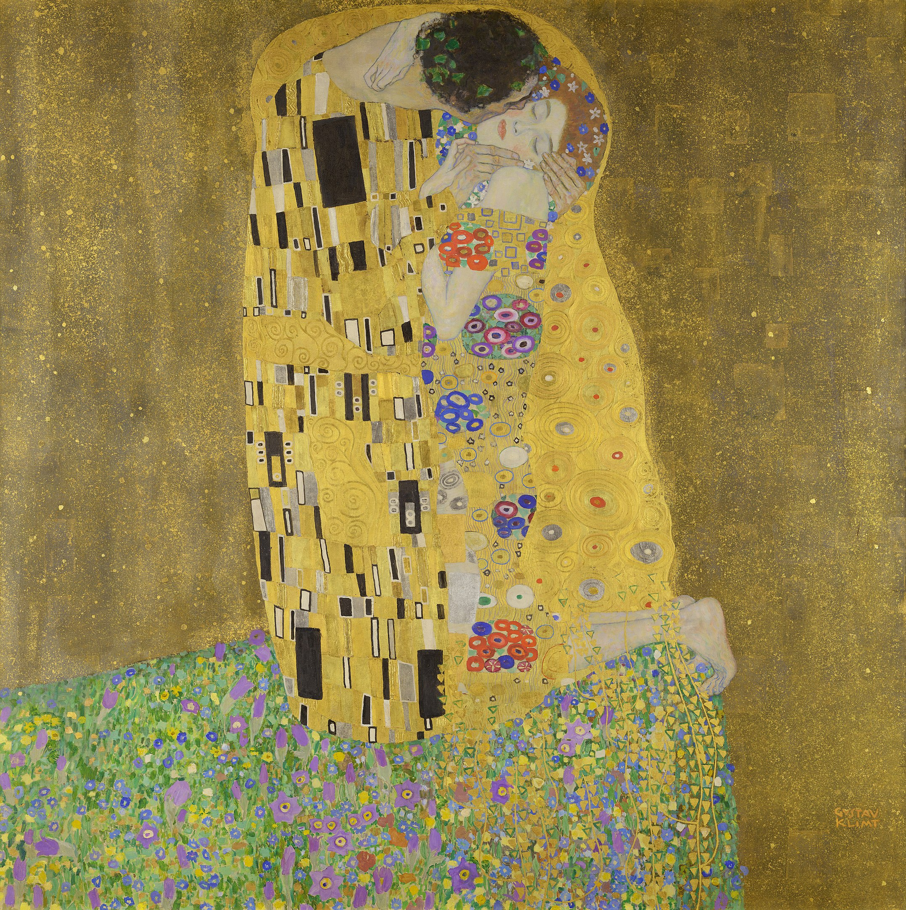

私はクリムトが好きだ。なぜなら、とても分かりやすい。
誰かに教えるときにも絵を見せればすぐに共感してもらえるほど、彼の描いた絵はどれも美しい。
煌びやかで美しい絵画には、没後100年をすぎてもなお色褪せない輝きを放っている。
クリムトはその一時代を「金の時代」と総称されるほど、絵画に金箔を取り入れることで有名であった。
線は柔らかく写実的だが、体が後ろへと押されるような迫力。
美しいものは時に恐怖すら覚える、とはまさにこのこと。ぜひ体感していただきたい。
| 1862年 | ウィーンに生まれる。7人兄弟の第2子 |
|---|---|
| 1879年 | 弟エルンストと友人のフランツ・マッチュとともに共同で美術やデザインの請負を始める |
| 三人は劇場装飾を中心とした芸術家商会を設立 |
| 1894年 | ウィーン大学の大講堂の天井画の制作を依頼され、「哲学」「医学」「法学」の学部の絵3点を担当 |
|---|---|
|
人間の知性の勝利を高らかに歌い上げるという依頼者が意図したテーマに反し、 これら3作は理性の優越性を否定する寓意に満ちたもので、その是非をめぐり大論争を引き起こした。 （のちにナチスによって没収。1945年にインメンドルフ城において、親衛隊が撤退する際の放火により焼失している。） |


{kind=link}
1901年

{kind=link}
“ Gustav Klimt 039” by OSXLicensed under パブリック・ドメイン via ウィキメディア・コモンズ
『ユディト』
旧約聖書外伝に登場する
「ユディト」という女性がモデル。
| 1903年 | クリムトの回顧展が行われた。 |
|---|---|
| 1906年 | オーストリア芸術家連盟を結成。 |

“Gustav Klimt 046” by OSX Licensed under パブリック・ドメイン viaウィキメディア・コモンズ
『アデーレブロッホ＝バウアーの肖像』
絵画として当時最高値の156億円で売却。

{kind=link}
“The Kiss - Gustav Klimt - Google Cultural Institute” by OSX Licensed under パブリック・ドメイン viaウィキメディア・コモンズ
『接吻』
この頃の作品群は「金の時代」と呼ばれ、クリムトは金箔を多用する。
| 1918年 | 脳梗塞と肺炎（スペインかぜの症状悪化により発病）により死去。 |
|---|